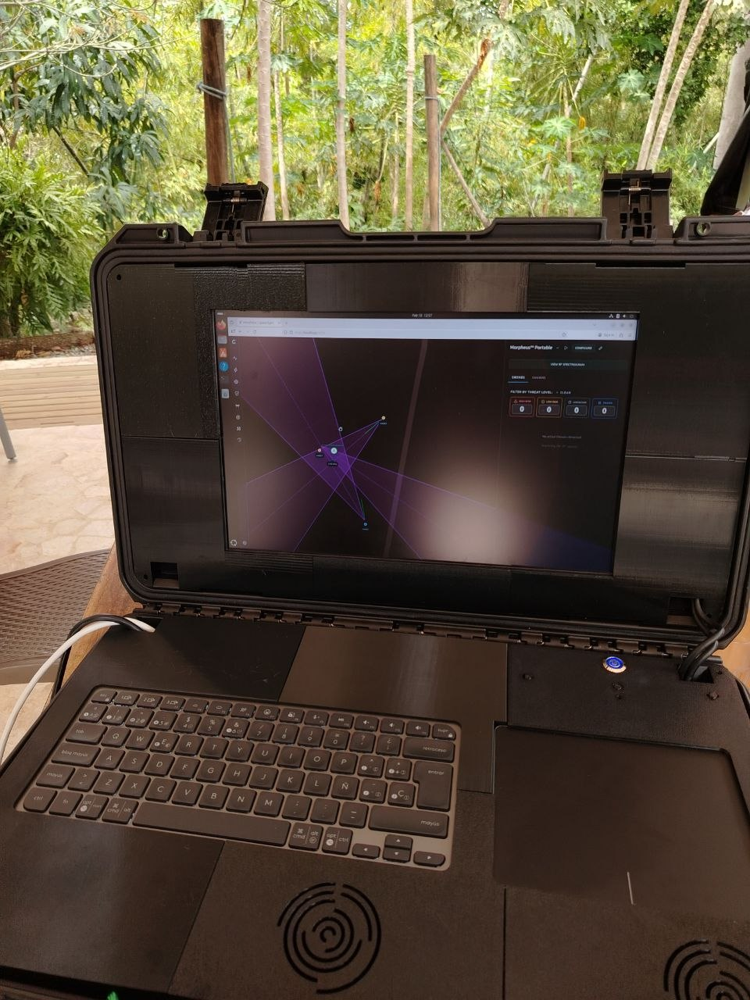
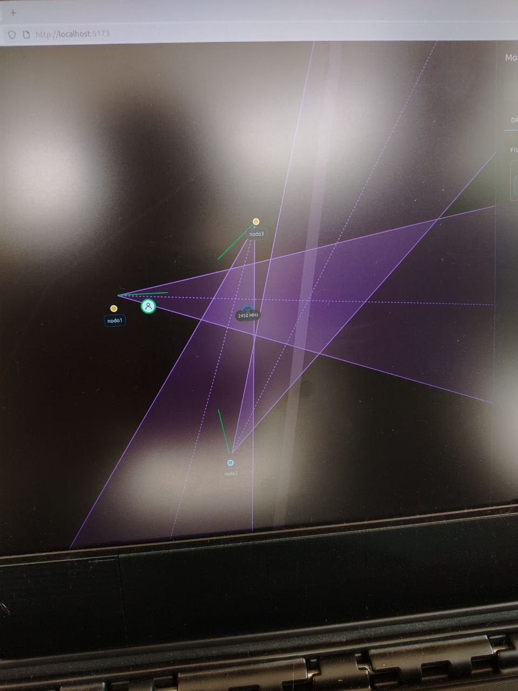
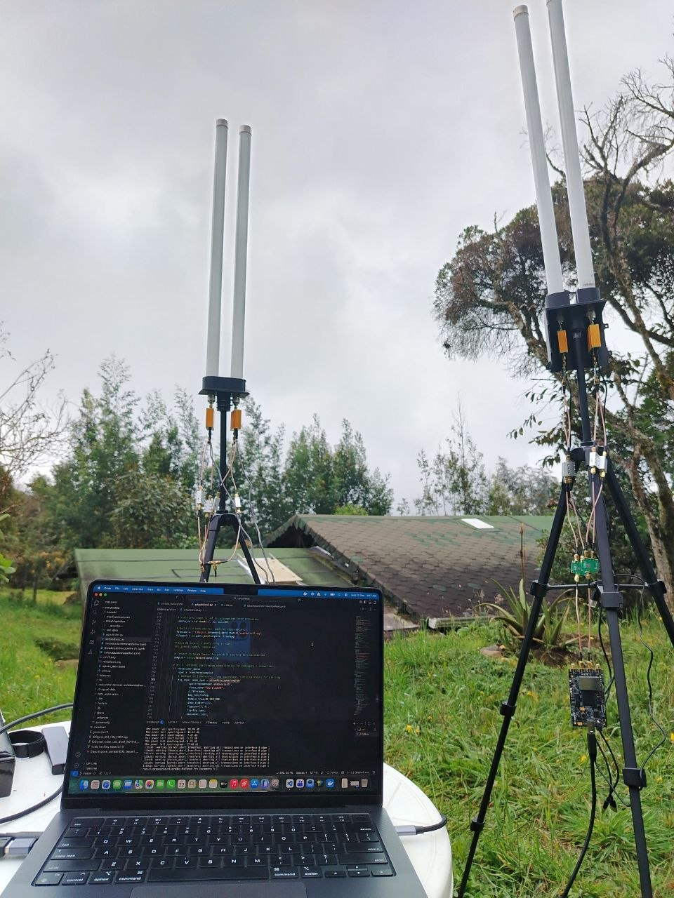
MORPHEUS
Distributed drone detection system based on RF acquisition, machine learning, DOA estimation, and geospatial triangulation. Built with Python, Raspberry Pi, SDR hardware, FastAPI, React, and MQTT.
Machine Learning Engineer · Intelligent Systems · Data Science
Mechatronics engineer focused on machine learning, RF/SDR systems, backend development, and real-world automation. I design end-to-end solutions, from signal acquisition and data pipelines to APIs, dashboards, and deployed systems.
About
My work sits at the intersection of machine learning, RF signal processing, data systems, and software engineering. I enjoy solving real-world problems with solid technical foundations, clean implementation, and systems that can scale from prototype to production.
Recently, I have been focused on distributed RF-based drone detection, data acquisition pipelines, FastAPI backends, React frontends, MQTT coordination, and model experimentation in Azure.
Skills
 Python
Python SQL
SQL React
React FastAPI
FastAPI Machine Learning
Machine Learning MQTT
MQTT Data Analysis
Data AnalysisFeatured Projects



Distributed drone detection system based on RF acquisition, machine learning, DOA estimation, and geospatial triangulation. Built with Python, Raspberry Pi, SDR hardware, FastAPI, React, and MQTT.
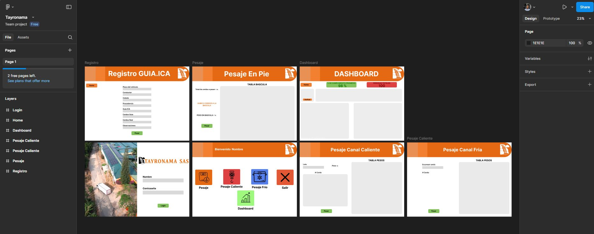
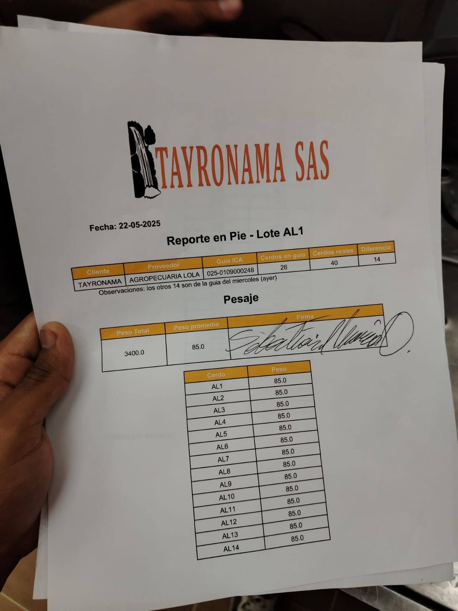
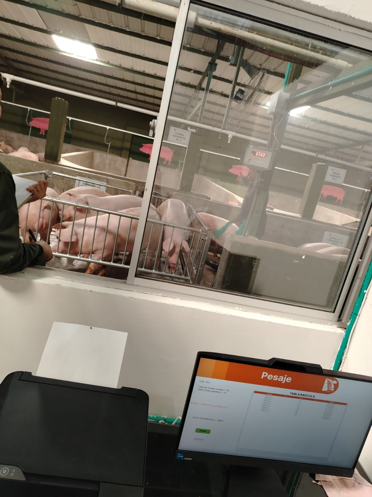
Industrial data capture and reporting system for pork processing operations, integrating serial communication, automated reports, traceability, and operational dashboards.
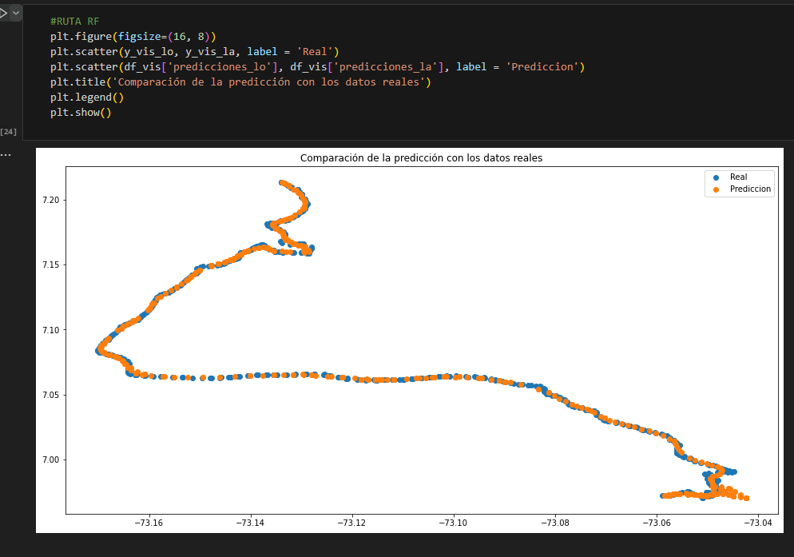
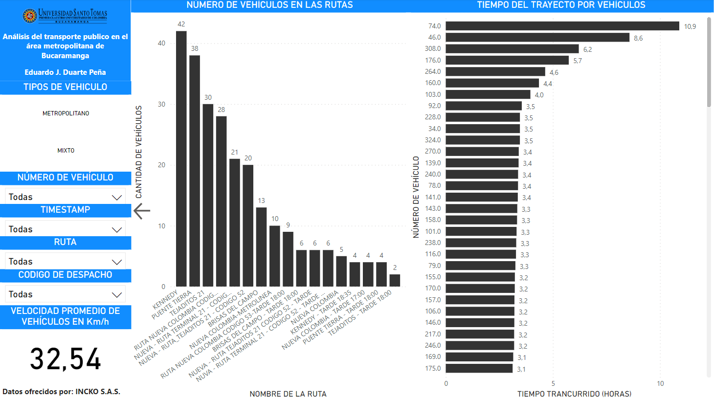
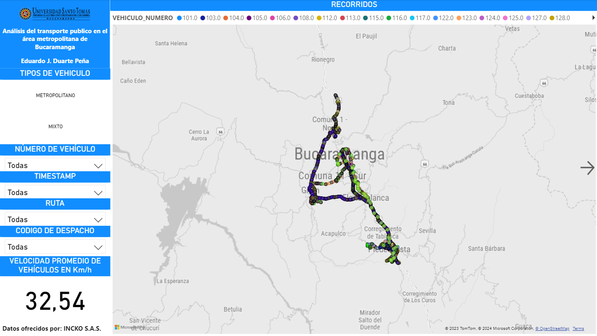
Applied data science and machine learning to model and analyze public transportation routes in Bucaramanga, supported by dashboards and operational insights.
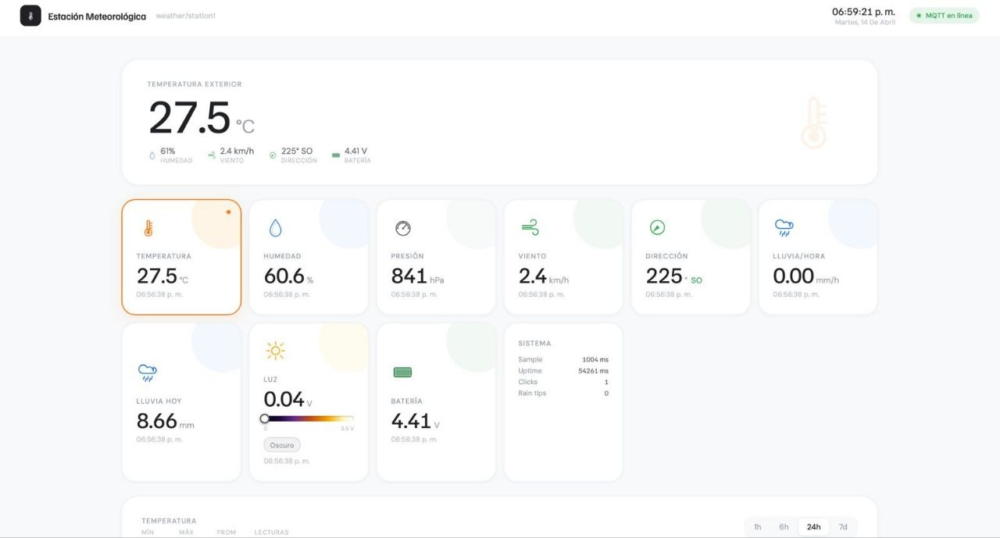
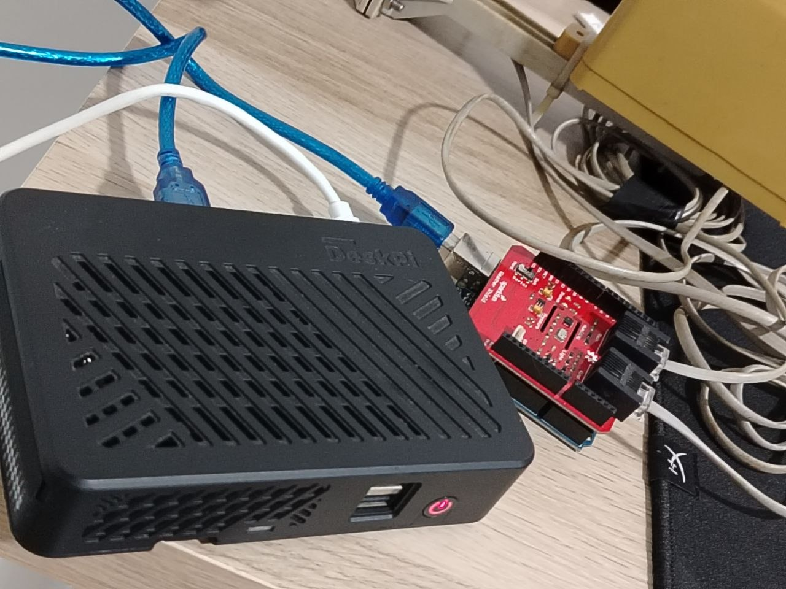
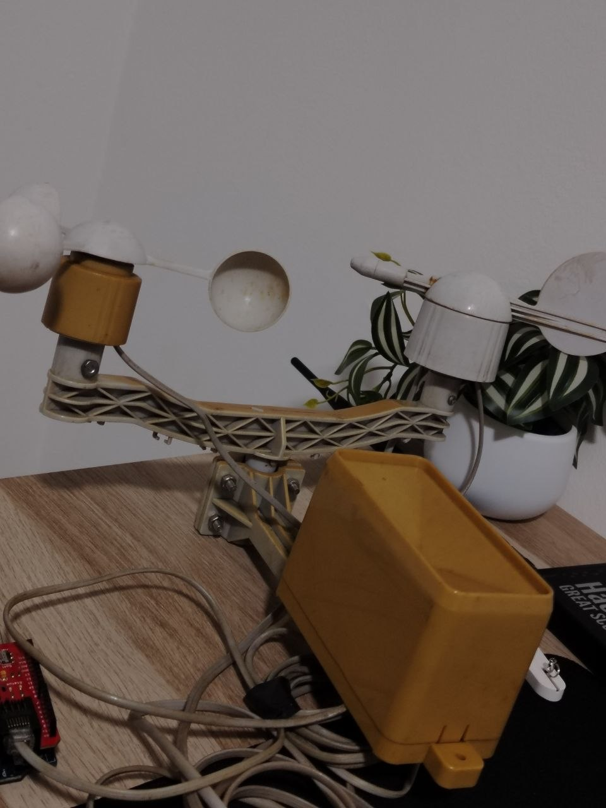
Complete weather monitoring system with Arduino, SparkFun sensors, MQTT communication, FastAPI backend, SQLite storage, and a real-time dashboard for environmental metrics and operational status.
Contact